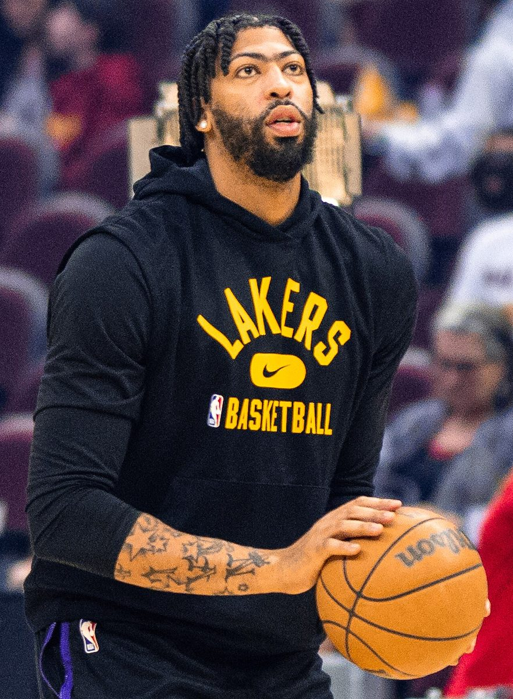

塔图姆狂轰41分！凯尔特人顶住奇才反扑131-116过关，终结四连败
绿衫军次节轰下46分、半场领先31分，末节虽遭华盛顿疯狂追分仍稳住阵脚，在NBA杯保持全胜战绩。

华盛顿——周二晚间，在第一资本竞技馆，杰森·塔图姆全场砍下41分、6个篮板并送出8次助攻，带领波士顿凯尔特人以131-116击败华盛顿奇才，终于终结了此前的四连败颓势。
这场胜利让绿衫军延续了对阵奇才的12连胜，球队本赛季战绩改写为12胜6负，同时在NBA杯东部C组中取得了3胜0负的不败开局。
半场三分雨倾泻，绿军半场领先31分

比赛首节，波士顿便由中锋尼米亚斯·克塔（Neemias Queta）率先发难，他单节独得个人赛季新高21分中的13分，而此时奇才中锋安东尼·戴维斯甚至还没运动战进球。绿衫军以34-28领先结束首节。
进入第二节，凯尔特人进攻彻底爆发，单节轰出46分并飙进10记三分球。塔图姆在上半场就火力全开，投篮13投9中、三分球9投6中狂揽28分。期间他在短短1分43秒内连进三记三分，以一波11-0的攻击波将比分扩大至70-38。保罗·乔治也在次节添上个人全场28分中的13分，帮助波士顿半场建立起80-49的巨大领先。
奇才绝地反扑迫近分差，沙伊尔曼携手塔图姆终结悬念
易边再战，奇才在第三节打出40-24的强势反击。安东尼·戴维斯扛起大旗，全场斩获33分和13个篮板；凯肖恩·乔治（Kyshawn George）贡献24分，新秀AJ·迪班萨（AJ Dybantsa）砍下20分、11个篮板和7次助攻的全面数据，特雷·杨也交出了17分和12次助攻。

比赛还剩3分19秒时，迪班萨突破打板命中，奇才完成了一波疯狂抹平29分差距的反扑，将比分追至112-117。危急时刻，塔图姆在下一个回合突破上篮止血，随后贝勒·沙伊尔曼（Baylor Scheierman）底角命中个人今晚第一记进球——一记关键三分球。紧接着，沙伊尔曼两罚全中并再中一记远投，策动了一波14-4的收尾攻势，彻底浇灭了奇才的反扑希望，同时也终结了主队的三连胜。
“下半场我错失了太多机会，今晚回去我肯定得为这事生自己的气，”塔图姆赛后接受NBC波士顿体育采访时表示，“在NBA没有领先是绝对安全的，对手也是职业球员，领着薪水在场上拼命……所以我们只能顶住风暴，然后给出回击。”
杯赛形势明朗，周五迎小组出线生死战
此役过后，奇才战绩来到7胜12负（杯赛2胜2负），在数学层面上已提前宣告无缘本届NBA杯淘汰赛。塔图姆本场出战37分钟，全场25投13中，其中三分球15投6中。周五晚间，凯尔特人将回到主场TD花园迎战亚特兰大老鹰，胜者将直接锁定东部C组头名，拿到一张晋级八强淘汰赛的门票。